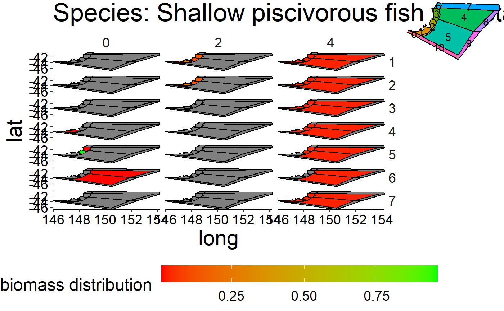

R/plot-spatial-box.R
plot_spatial_box.RdVisualize the spatial distribution per species and stanza combination.
plot_spatial_box(bio_spatial, bgm_as_df, select_species = NULL, timesteps = 2, polygon_overview = 0.2)
| bio_spatial | Biomass per group and stanza in tonnes for each timestep,
layer and polygon. This dataframe should be generated with
|
|---|---|
| bgm_as_df | *.bgm file converted to a dataframe. Please use |
| select_species | Character vector listing the species to plot. If no species are selected
|
| timesteps | Integer giving the number of timesteps to visualize. Default is |
| polygon_overview | numeric value between 0 and 1 indicating the size used to plot the polygon overview in the
upper right corner of the plot. Default is |
grob of 3 ggplot2 plots.
d <- system.file("extdata", "setas-model-new-trunk", package = "atlantistools") bgm_as_df <- convert_bgm(file.path(d, "VMPA_setas.bgm")) # Spatial distribution in Atlantis is based on adu- and juv stanzas. # Therefore, we need to aggregate the age-based biomass to # stanzas with \code{\link{combine_ages}}. bio_spatial <- combine_ages(ref_bio_sp, grp_col = "species", agemat = ref_agemat)#>if (FALSE) { # Apply \code{\link{plot_spatial_box}} grobs <- plot_spatial_box(bio_spatial, bgm_as_df, timesteps = 3) gridExtra::grid.arrange(grobs[[1]]) gridExtra::grid.arrange(grobs[[9]]) # use names() to select specific plots names(grobs) } # Plot specific species grobs <- plot_spatial_box(bio_spatial, bgm_as_df, select_species = "Shallow piscivorous fish", timesteps = 3)#>#>#>